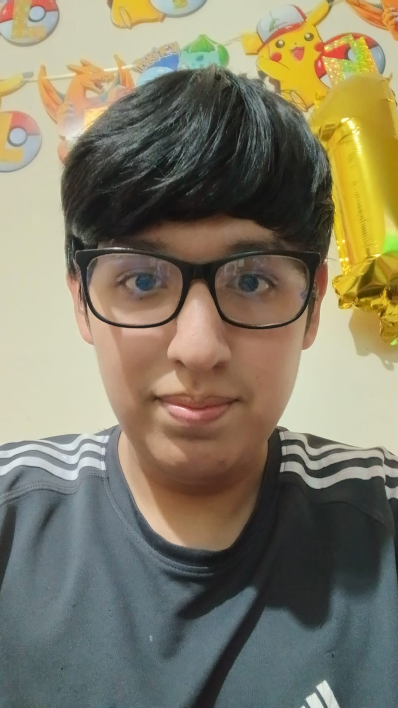

El Blog Personal de Leonel
Mi nombre es Leonel Alexander Velasque Castillo, tengo 17 años de edad, soy de Lima, Perú y actualmente estoy en el
primer ciclo de mi carrera estudiando Diseño y Desarrollo de Software en el Instituto CERTUS (Av. Santiago de Surco).

Estudios Escolares:
Educación completa - I.E. Héroes del Alto Cenepa 6070
Estudios Técnicos:
Actualmente estudiando en CERTUS la carrera de Diseño y Desarrollo de Software.
Estudios Universitarios:
Ninguno
Cursos:
Ninguno
Certificaciones:
Certificación Modular en Ofimática – Computación e Informática, 300 horas, emitida por el CETPRO Público “María Auxiliadora” (2025)
Otros estudios realizados:
Ninguno
Tabla de Estudios Básicos:
| Nivel Educativo |
Institución |
Año |
Estado |
| Primaria |
Colegio Heroes del Alto Cenepa 6070 |
2020 |
Culminado |
| Secundaria |
Colegio Heroes del Alto Cenepa 6070 |
2025 |
Culminado |
Mis Habilidades:
- Empatía.
- Adaptabilidad.
- Creatividad.
- Trabajo en equipo.
- Manejo de herramientas digitales.
Lista de Conocimientos:
- Word.
- Excel.
- Edición de video digital.
- Inteligencia Artificial Básica.
- Redes sociales.
Perfil del estudiante (mío):
- Soy Leonel Alexander Velasque Castillo.
- Estudio la carrera de Diseño y Desarrollo de Software en el instituto Certus.
- Me interesa profundamente el desarrollo de aplicaciones web y móviles, y la creación de interfaces digitales que sean fáciles de usar para las personas.
- Mis fortalezas son la curiosidad por la tecnología, el pensamiento lógico y las ganas de aprender.
- Poseo conocimientos básicos en herramientas digitales y principios iniciales de programación.
- Mi objetivo actual es dominar mis primeros lenguajes de programación en el instituto.
- En el futuro espero trabajar creando software original que ayude a las personas.